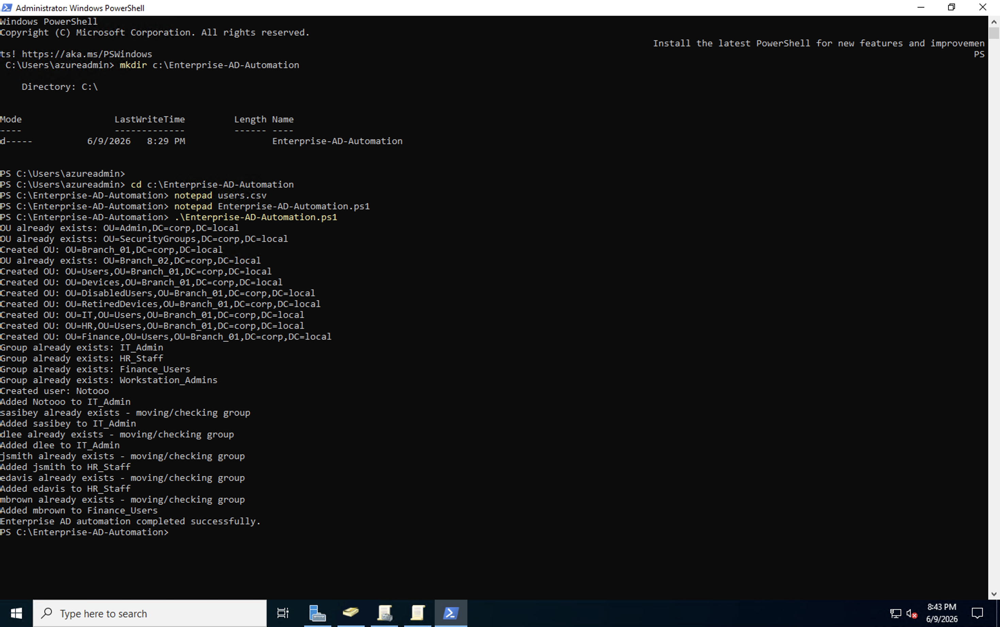
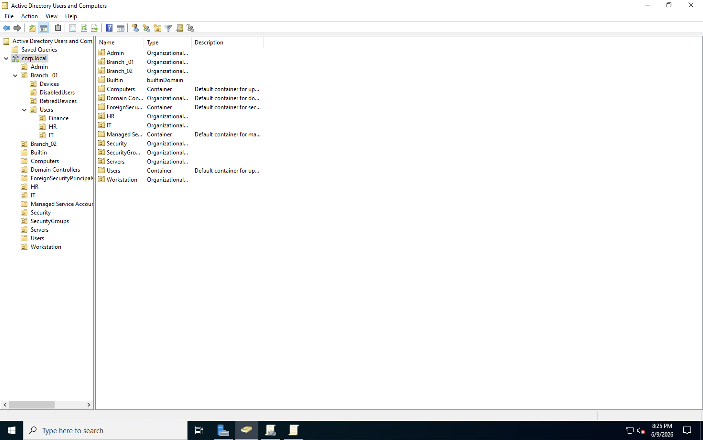
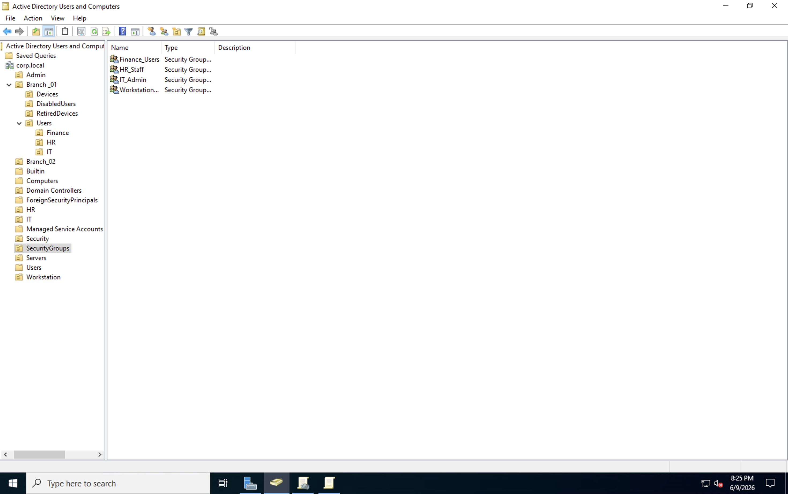
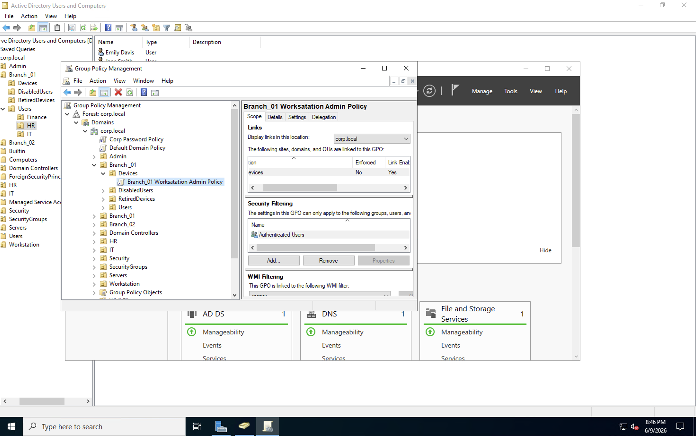

Enterprise Active Directory Administration Lab
Built a Windows Server 2022 Active Directory environment in Microsoft Azure.
This project simulates a real enterprise environment with Organizational Units,
security groups, RBAC, PowerShell automation, and Group Policy management.
Technologies Used
Microsoft Azure
Windows Server 2022
Active Directory Domain Services
Group Policy Management
PowerShell
DNS
What I Built
Deployed a Windows Server 2022 Domain Controller in Azure
Created the corp.local Active Directory Domain
Designed a multi-branch OU structure
Created RBAC Security Groups
Automated user provisioning with PowerShell and CSV imports
Configured and linked Group Policy Objects
OU Structure
corp.local
│
├── Admin
├── SecurityGroups
├── Branch_01
│ ├── Users
│ │ ├── IT
│ │ ├── HR
│ │ └── Finance
│ ├── Devices
│ ├── DisabledUsers
│ └── RetiredDevices
│
└── Branch_02
Skills Demonstrated
Active Directory Administration
Windows Server Administration
PowerShell Automation
Group Policy Management
User and Group Administration
RBAC Implementation
Microsoft Azure Infrastructure
Project Screenshots
PowerShell Automation

OU Structure

Security Groups

Users and Departments

Group Policy Management

← Back to Portfolio